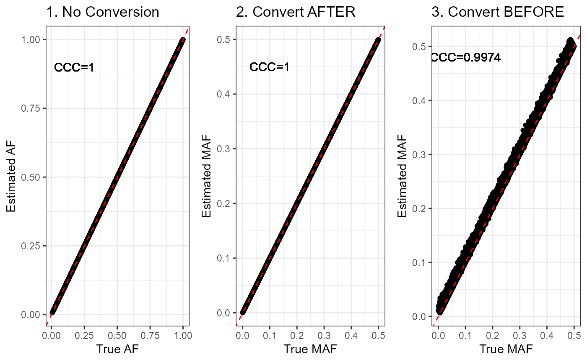
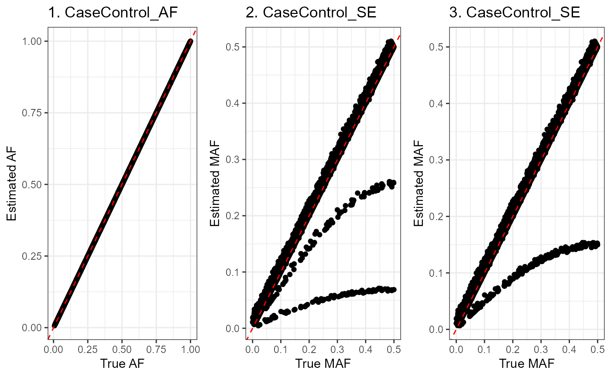

vignettes/CCAFE_Extra_Details.Rmd
CCAFE_Extra_Details.RmdIn this vignette we will share a few extra details regarding the usage of the functions in CCAFE.
For the vignette with basic usage and examples see the CCAFE Vignette.
Will create a simulated dataset to explore the issues discussed in this vignette.
This dataset will have:
# need to create simulated AFs from autosomes and sex chromosomes
# simulate 100 variants from each chromosome
# will simulate from a sample of 5000 XX and 5000 XY case individuals
# then add 5000 of each in control
set.seed(2020)
N_XX <- 5000
N_XY <- 5000
N <- N_XX + N_XY
for(chr in 1:24) {
refs <- runif(n = 100, min = 0, max = 1)
if(chr < 23) {
genos <- t(sapply(refs, function(x) {
rmultinom(1, N, c(x^2, 2*x*(1-x), (1-x)^2))
}))
afs_toadd <- apply(genos, 1, function(x) ((x[1]*2)+x[2])/(2*N))
} else {
if(chr == 23) { # simulate X chromosome variants
XX_alleles <- (sapply(refs, function(x) {
sum(rbinom(N_XX*2, 1, x))
}))
XY_alleles <- (sapply(refs, function(x) {
sum(rbinom(N_XY, 1, x))
}))
total_alleles <- XX_alleles + XY_alleles
afs_toadd <- total_alleles/(2*N_XX + N_XY)
} else { # simulate Y chromosome variants
XY_alleles <- (sapply(refs, function(x) {
sum(rbinom(N_XY, 1, x))
}))
afs_toadd <- XY_alleles/(N_XY)
}
}
if(chr == 1) {
simDat <- data.frame(chr = chr, pos = c(1:100), case_sim_af = afs_toadd)
} else {
simDat <- rbind(simDat, data.frame(chr = chr, pos = c(1:100), case_sim_af = afs_toadd))
}
}
simDat$control_sim_af <- 0
# simulate control AFs
for(chr in 1:24) {
refs <- simDat[simDat$chr == chr,]$case_sim_af
refs <- refs - runif(n = length(refs), min = 0, max = .025)
refs[refs < 0] <- 0
refs[refs > 1] <- 1
if(chr < 23) {
genos <- t(sapply(refs, function(x) {
rmultinom(1, N, c(x^2, 2*x*(1-x), (1-x)^2))
}))
afs_toadd <- apply(genos, 1, function(x) ((x[1]*2)+x[2])/(2*N))
} else {
if(chr == 23) { # simulate X chromosome variants
XX_alleles <- (sapply(refs, function(x) {
sum(rbinom(N_XX*2, 1, x))
}))
XY_alleles <- (sapply(refs, function(x) {
sum(rbinom(N_XY, 1, x))
}))
total_alleles <- XX_alleles + XY_alleles
afs_toadd <- total_alleles/(2*N_XX + N_XY)
} else { # simulate Y chromosome variants
XY_alleles <- (sapply(refs, function(x) {
sum(rbinom(N_XY, 1, x))
}))
afs_toadd <- XY_alleles/(N_XY)
}
}
simDat[simDat$chr == chr, ]$control_sim_af <- afs_toadd
}
simDat$total_sim_af <- (simDat$case_sim_af*10000 + simDat$control_sim_af*10000)/(10000 + 10000)
# need to add OR and SE
OR <- rep(0, nrow(simDat))
SE <- rep(0, nrow(simDat))
for(i in 1:nrow(simDat)) {
AF1 = simDat[i, ]$case_sim_af
AF2 = simDat[i,]$control_sim_af
if(simDat[i,]$chr < 23) {
# first calculate the 2x2 tables of allele counts
a = AF1 * 2 * 10000
b = (1-AF1) * 2 * 10000
c = AF2 * 2 * 10000
d = (1-AF2) * 2 * 10000
} else {
if(simDat[i,]$chr == 23) {
a = AF1 * (2*5000 + 5000)
b = (1-AF1) * (2*5000 + 5000)
c = AF2 * (2*5000 + 5000)
d = (1-AF2) * (2*5000 + 5000)
} else {
a = AF1 * 5000
b = (1-AF1) * 5000
c = AF2 * 5000
d = (1-AF2) * 5000
}
}
OR[i] <- (a*d)/(b*c)
SE[i] <- sqrt(1/a + 1/b + 1/c + 1/d)
}
simDat$OR <- OR
simDat$SE <- SE
simDat[simDat$chr == 23, ]$chr <- "X"
simDat[simDat$chr == 24, ]$chr <- "Y"
simDat <- simDat %>% rowwise() %>%
mutate(is_minor_case = ifelse(case_sim_af <= 0.5, 1, 0),
is_minor_control = ifelse(control_sim_af <= 0.5, 1, 0),
is_minor_total = ifelse(total_sim_af <= 0.5, 1, 0)) %>%
mutate(case_sim_maf = ifelse(is_minor_case, case_sim_af, 1-case_sim_af),
control_sim_maf = ifelse(is_minor_control, control_sim_af, 1-control_sim_af),
total_sim_maf = ifelse(is_minor_total, total_sim_af, 1-total_sim_af))
head(simDat)
#> # A tibble: 6 × 13
#> # Rowwise:
#> chr pos case_sim_af control_sim_af total_sim_af OR SE is_minor_case
#> <chr> <int> <dbl> <dbl> <dbl> <dbl> <dbl> <dbl>
#> 1 1 1 0.649 0.636 0.642 1.06 0.0209 0
#> 2 1 2 0.394 0.389 0.392 1.02 0.0205 1
#> 3 1 3 0.615 0.591 0.603 1.11 0.0204 0
#> 4 1 4 0.476 0.456 0.466 1.09 0.0201 1
#> 5 1 5 0.138 0.117 0.128 1.20 0.0300 1
#> 6 1 6 0.0678 0.0452 0.0566 1.54 0.0441 1
#> # ℹ 5 more variables: is_minor_control <dbl>, is_minor_total <dbl>,
#> # case_sim_maf <dbl>, control_sim_maf <dbl>, total_sim_maf <dbl>A key assumption made by the implementation of CaseControl_SE is that the frequency being estimated is that of the minor allele. As such, the returned value is always the minor allele and bounded [0,0.5], regardless of which allele was used for calculation of the input OR and SE. This can create complications in data harmonization between multiple datasets, because the minor allele may not always be the same between the two datasets. We note that care should be taken when using this method to reconstruct case and control AFs for use in secondary analyses as the alleles being compared may not be retained.
nrow(simDat[simDat$is_minor_case != simDat$is_minor_control, ])
#> [1] 32There are 32 variants for which the minor allele is a different allele in cases and controls.
diff_alleles <- simDat[simDat$is_minor_case != simDat$is_minor_control, ]
diff_alleles
#> # A tibble: 32 × 13
#> # Rowwise:
#> chr pos case_sim_af control_sim_af total_sim_af OR SE
#> <chr> <int> <dbl> <dbl> <dbl> <dbl> <dbl>
#> 1 1 95 0.507 0.490 0.498 1.07 0.0200
#> 2 2 28 0.504 0.493 0.499 1.05 0.0200
#> 3 4 47 0.520 0.491 0.505 1.12 0.0200
#> 4 6 7 0.504 0.495 0.500 1.04 0.0200
#> 5 6 81 0.501 0.496 0.498 1.02 0.0200
#> 6 7 57 0.504 0.498 0.501 1.02 0.0200
#> 7 7 88 0.519 0.495 0.507 1.10 0.0200
#> 8 8 14 0.503 0.485 0.494 1.07 0.0200
#> 9 8 23 0.522 0.499 0.511 1.10 0.0200
#> 10 8 98 0.501 0.481 0.491 1.08 0.0200
#> # ℹ 22 more rows
#> # ℹ 6 more variables: is_minor_case <dbl>, is_minor_control <dbl>,
#> # is_minor_total <dbl>, case_sim_maf <dbl>, control_sim_maf <dbl>,
#> # total_sim_maf <dbl>This will results in different alleles being reported from CaseControl_SE, which, if used for subsequent analyses like case case GWAS (CC-GWAS) would result in the user comparing different alleles between datasets/groups.
In analyses for the manuscript we assessed using the total sample MAF compared to the total sample AF. Here we noted that converting the total AF to MAF first (and using that as input) introduces variability due to rounding.
Here we will show the effects of converting to MAF in 3 scenarios:
simDat <- simDat[is.finite(simDat$OR), ]
simDat <- as.data.frame(simDat)
res_AF <- CaseControl_AF(data = simDat,
N_case = 10000,
N_control = 10000,
OR_colname = "OR",
AF_total_colname = "total_sim_af")
res_MAF <- CaseControl_AF(data = simDat,
N_case = 10000,
N_control = 10000,
OR_colname = "OR",
AF_total_colname = "total_sim_maf")
p_1 <- ggplot(res_AF, aes(x = case_sim_af, y = AF_case)) +
geom_point() +
geom_abline(color = "red", linetype = "dashed") +
theme_bw() +
xlab("True AF") +
ylab("Estimated AF") +
geom_text(x = .175, y = .9, label = paste0("CCC=", round(DescTools::CCC(res_AF$case_sim_af, res_AF$AF_case, na.rm = T)$rho.c$est, 4))) +
ggtitle("1. No Conversion")
#> Warning in sqrt(((1 - ((r)^2)) * (p)^2 * (1 - ((p)^2))/(r)^2 + (2 * (p)^3 * :
#> NaNs produced
res_AF$MAF_case <- sapply(res_AF$AF_case, function(x) ifelse(x > 0.5, 1-x, x))
res_AF <- as.data.frame(res_AF)
p_2 <- ggplot(res_AF, aes(x = case_sim_maf, y = MAF_case)) +
geom_point() +
geom_abline(color = "red", linetype = "dashed") +
theme_bw() +
xlab("True MAF") +
ylab("Estimated MAF") +
geom_text(x = .1, y = .45, label = paste0("CCC=", round(DescTools::CCC(res_AF$case_sim_maf, res_AF$MAF_case, na.rm = T)$rho.c$est, 4))) +
ggtitle("2. Convert AFTER")
#> Warning in sqrt(((1 - ((r)^2)) * (p)^2 * (1 - ((p)^2))/(r)^2 + (2 * (p)^3 * :
#> NaNs produced
p_3 <- ggplot(res_MAF, aes(x = case_sim_maf, y = AF_case)) +
geom_point() +
geom_abline(color = "red", linetype = "dashed") +
theme_bw() +
xlab("True MAF") +
ylab("Estimated MAF") +
geom_text(x = .1, y = .48, label = paste0("CCC=", round(DescTools::CCC(res_MAF$case_sim_maf, res_MAF$AF_case, na.rm = T)$rho.c$est, 4))) +
ggtitle("3. Convert BEFORE")
cowplot::plot_grid(p_1, p_2, p_3, ncol = 3)
#> Warning: Removed 5 rows containing missing values or values outside the scale range
#> (`geom_point()`).
#> Warning: Removed 5 rows containing missing values or values outside the scale range
#> (`geom_point()`).
#> Removed 5 rows containing missing values or values outside the scale range
#> (`geom_point()`). Here it’s clear to see that as long as the user does not convert to MAF before estimating the case and control AFs, then we get perfect reconstruction of the AFs. Conversely, converting the total sample AF to MAF first introduces variability around the estimates (seen in scenario 3). Overall, the estimates are still highly accurate, but when possible we recommend not converting AFs to MAF before inputting to CaseControl_AF.
Another potential problem that users may encounter is the presence of sex chromosomes when using CaseControl_SE.
The derivation for the framework underlying CaseControl_SE utilizes the total allele number (AN) for cases and controls. The original proposed method in ReACt used the equation AN = 2*N, where N is the sample size. However, this is only true in all samples for autosomes. This equation will also hold true for the X chromosome in an all biological female (XX) sample. However, in any sample in which there are both XX and XY individuals, this equation will not give the correct total AN for the sex chromosomes.
We have added the ability to estimate the case and control MAF for the sex chromosomes by employing the following equations for the AN in the original framework:
Failing to use the correct AN resulted in MAF estimates that did not follow the same trend as the autosomes. We require chromosome data with the input for CaseControl_SE to check for the presence of variants on sex chromosomes. Notably, in order to estimate the MAFs for these sex chromosomes, users must know and provide as input the number of XX and XY individuals per case and control sample. While it is reasonable to expect most studies to publish this demographic information, it may not always be available. In this case, users can set the flag ‘remove_sex_chromosomes’ to TRUE and the method will return the MAFs for only autosomal variants. We will demonstrate below what the results may look like if the sex chromosomes are not properly accounted for.
The implementation of CaseControl_AF directly uses sample size and total AF, rather than total AN. Thus this method is not sensitive to the XX and XY specific samples sizes. We will also show this below.
# to simulate a dataset in which the sex chromosomes are not properly accounted for, we will falsely
# rename the x and y chromosomes to autosomes
simDat_nosex <- simDat
simDat_nosex[simDat_nosex$chr == "X", ]$chr <- 1
simDat_nosex[simDat_nosex$chr == "Y", ]$chr <- 2
af_res_sex <- CaseControl_AF(data = simDat,
N_case = 10000,
N_control = 10000,
OR_colname = "OR",
AF_total_colname = "total_sim_af")
se_res <- CaseControl_SE(data = simDat_nosex,
N_case = 10000,
N_control = 10000,
OR_colname = "OR",
SE_colname = "SE",
chromosome_colname = "chr",
position_colname = "pos",
sex_chromosomes = FALSE,
do_correction = FALSE)
se_res_sex <- CaseControl_SE(data = simDat,
N_case = 10000,
N_control = 10000,
OR_colname = "OR",
SE_colname = "SE",
chromosome_colname = "chr",
position_colname = "pos",
sex_chromosomes = TRUE,
remove_sex_chromosomes = FALSE,
do_correction = FALSE,
N_XX_case = 5000,
N_XX_control = 5000,
N_XY_case = 5000,
N_XY_control = 5000)Examine the following scenarios:
p_a <- ggplot(af_res_sex, aes(x = case_sim_af, y = AF_case)) +
geom_point() +
geom_abline(color = "red", linetype = "dashed") +
theme_bw() +
xlab("True AF") +
ylab("Estimated AF") +
ggtitle("1. CaseControl_AF")
p_b <- ggplot(se_res, aes(x = case_sim_maf, y = MAF_case)) +
geom_point() +
geom_abline(color = "red", linetype = "dashed") +
theme_bw() +
xlab("True MAF") +
ylab("Estimated MAF") +
ggtitle("2. CaseControl_SE")
p_c <- ggplot(se_res_sex, aes(x = case_sim_maf, y = MAF_case)) +
geom_point() +
geom_abline(color = "red", linetype = "dashed") +
theme_bw() +
xlab("True MAF") +
ylab("Estimated MAF") +
ggtitle("3. CaseControl_SE")
plot_grid(p_a, p_b, p_c, ncol =3)
#> Warning: Removed 5 rows containing missing values or values outside the scale range
#> (`geom_point()`).
sessionInfo()
#> R version 4.4.1 (2024-06-14 ucrt)
#> Platform: x86_64-w64-mingw32/x64
#> Running under: Windows 11 x64 (build 22631)
#>
#> Matrix products: default
#>
#>
#> locale:
#> [1] LC_COLLATE=English_United States.utf8
#> [2] LC_CTYPE=English_United States.utf8
#> [3] LC_MONETARY=English_United States.utf8
#> [4] LC_NUMERIC=C
#> [5] LC_TIME=English_United States.utf8
#>
#> time zone: America/Denver
#> tzcode source: internal
#>
#> attached base packages:
#> [1] stats graphics grDevices utils datasets methods base
#>
#> other attached packages:
#> [1] cowplot_1.1.3 DescTools_0.99.55 CCAFE_0.99.0 lubridate_1.9.3
#> [5] forcats_1.0.0 stringr_1.5.1 dplyr_1.1.4 purrr_1.0.2
#> [9] readr_2.1.5 tidyr_1.3.1 tibble_3.2.1 ggplot2_3.5.1
#> [13] tidyverse_2.0.0
#>
#> loaded via a namespace (and not attached):
#> [1] gld_2.6.6 gtable_0.3.5 xfun_0.45 bslib_0.8.0
#> [5] htmlwidgets_1.6.4 lattice_0.22-6 tzdb_0.4.0 vctrs_0.6.5
#> [9] tools_4.4.1 generics_0.1.3 proxy_0.4-27 fansi_1.0.6
#> [13] highr_0.11 pkgconfig_2.0.3 Matrix_1.7-0 data.table_1.15.4
#> [17] desc_1.4.3 readxl_1.4.3 rootSolve_1.8.2.4 lifecycle_1.0.4
#> [21] farver_2.1.2 compiler_4.4.1 textshaping_0.4.0 Exact_3.3
#> [25] munsell_0.5.1 htmltools_0.5.8.1 class_7.3-22 sass_0.4.9
#> [29] yaml_2.3.10 pillar_1.9.0 pkgdown_2.1.0 jquerylib_0.1.4
#> [33] MASS_7.3-61 cachem_1.1.0 boot_1.3-31 tidyselect_1.2.1
#> [37] digest_0.6.36 mvtnorm_1.2-5 stringi_1.8.4 labeling_0.4.3
#> [41] fastmap_1.2.0 grid_4.4.1 colorspace_2.1-1 lmom_3.0
#> [45] expm_0.999-9 cli_3.6.3 magrittr_2.0.3 utf8_1.2.4
#> [49] e1071_1.7-14 withr_3.0.1 scales_1.3.0 timechange_0.3.0
#> [53] httr_1.4.7 rmarkdown_2.28 cellranger_1.1.0 ragg_1.3.2
#> [57] hms_1.1.3 evaluate_0.24.0 knitr_1.48 rlang_1.1.4
#> [61] Rcpp_1.0.13 glue_1.7.0 rstudioapi_0.16.0 jsonlite_1.8.8
#> [65] R6_2.5.1 systemfonts_1.1.0 fs_1.6.4